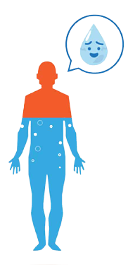

How to stay hydrated
“Dehydration can be mild, moderate or severe, based on how much of your body’s fluid is lost or not replaced. Severe cases can
lead to a hospital trip for IV fluids and could sometimes result in kidney damage or nervous system problems.”
How much water should you drink a day?
According to Dr. Ly, there’s something to the old “eight glasses a day” adage. For adults, a half-gallon — 64 ounces, or eight (8-ounce) glasses — is recommended. You may need more if you’re exercising or the weather is especially hot.
Electrolytes are especially important whether you're working out hard or whether dehydration symptoms like headaches or lightheadedness have already set in.
6 tips for staying hydrated
- Don’t wait till you’re thirsty to drink. By the time you feel thirsty, you’re already slightly dehydrated. Sip water steadily throughout the day and drink more fluids than usual when the weather is hot, especially if you’re active.
- Flavor your water. If plain water tastes boring to you, you can add flavor with fresh fruits or a splash of fruit juice. You can also consume clear broths, ice pops or sports drinks (especially if you're doing intense exercise). Just make sure to limit caffeine and alcohol.
- Eat water-rich fruits and vegetables. Certain fruits and vegetables contain plenty of water in addition to healthful nutrients. Watermelon, strawberries, cantaloupe, peaches and pineapples are fruits with high-water content. Water-rich vegetables include cucumbers, leafy greens, radishes, celery, zucchini and tomatoes.
- Stay inside when it gets too hot. On very hot days, stay indoors in an air-conditioned environment. If you don’t have air conditioning at home, try a shopping center, movie theater or public library. Avoid sun exposure, especially between 10 am and 2 pm, when the rays are strongest. Plan outdoor activities in the early morning or evening.
- Dress for the weather. Wear light, loose-fitting clothing that lets your skin breathe. Dark colors absorb heat, so stick with lighter shades. Wear a wide-brimmed hat in the sun to keep your head cool and use plenty of sunscreen to avoid sunburn, which can increase your skin temperature and make it harder to stay cool.
- Be aware of the signs of dehydration (below). If anyone in your family is ill, pay attention to how much they’re able to drink — especially young children and the elderly. Anyone with a fever, vomiting or diarrhea should drink plenty of fluids. Do not wait for signs of dehydration to appear.
- Darker-than-usual urine
- Not urinating despite steadily drinking water
- Muscle cramps
- Bad breath
- Fatigue
- Fever or chills
- Craving sweets
- Dry mouth/skin
- Fast heartbeat
- Irritability
- Confusion
- Drowsiness
Dehydration symptoms
-
